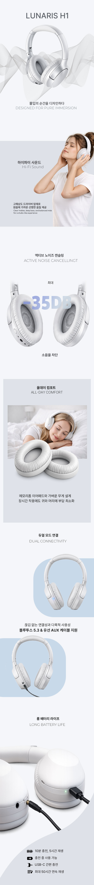

Visual Value Branding
제품 몰입을 위해 기획부터 감각적 연출까지 직접 설계한 상세페이지
product detail
design point
- 1 프로젝트 개요 및 기획 의도
- 소리의 본질과 '청취의 몰입'이라는 경험에 집중하여 기획했습니다. 사용자가 음악 속에 깊이 빠져드는 감각적인 무드를 설계의 핵심으로 삼았습니다
- 2 AI 협업을 통한 효율적 비주얼 구현
- 소리의 공간감을 표현하기 위해 AI 협업으로 감각적인 연출 컷을 생성했습니다. 기술을 활용해 제품에 걸맞은 프리미엄 비주얼을 직접 완성했습니다.
- 3 정보의 위계 설계
- 압도적인 몰입감을 방해하지 않도록 최소한의 요소로 정보를 배치했습니다. 핵심 기능을 임팩트 있게 노출하여 사용자가 제품의 가치에만 집중하도록 설계했습니다.
- 4 디자인 디테일 및 톤앤매너
- 깊이 있는 다크 톤과 세련된 그래픽을 조화롭게 구성했습니다. 여백을 활용해 제품의 완성도를 돋보이게 하며 몰입도 높은 브랜드 경험을 완성했습니다.

